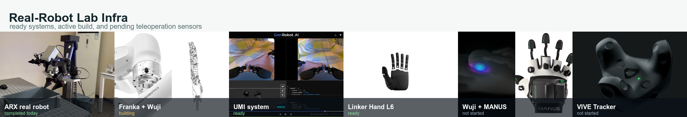
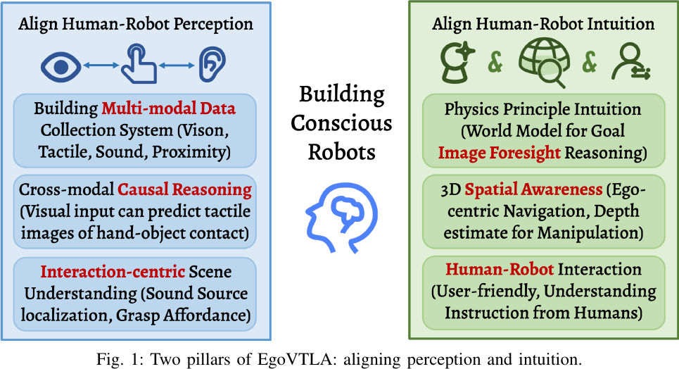
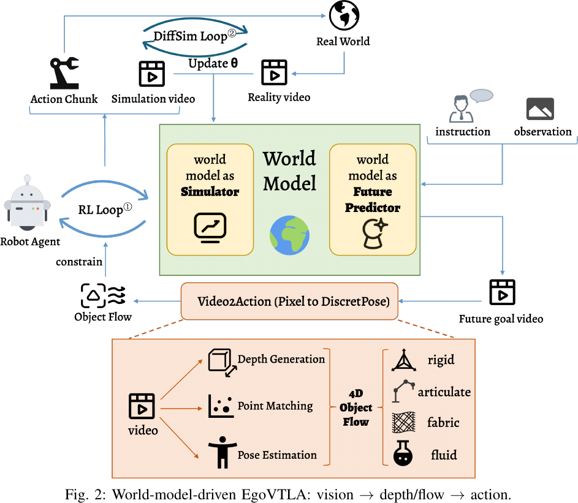
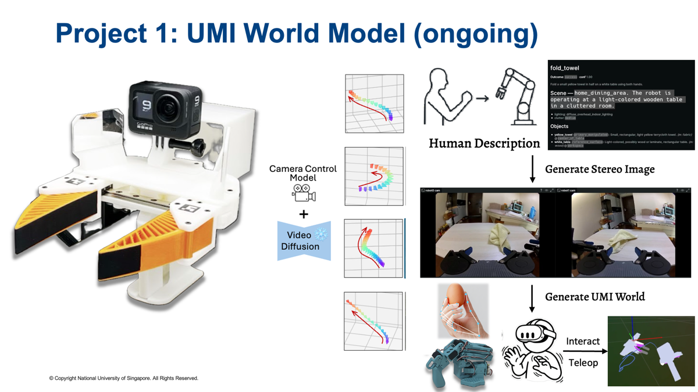
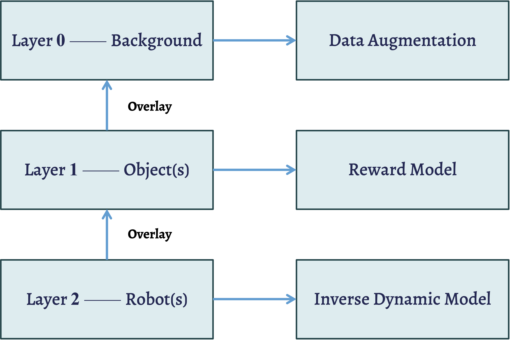
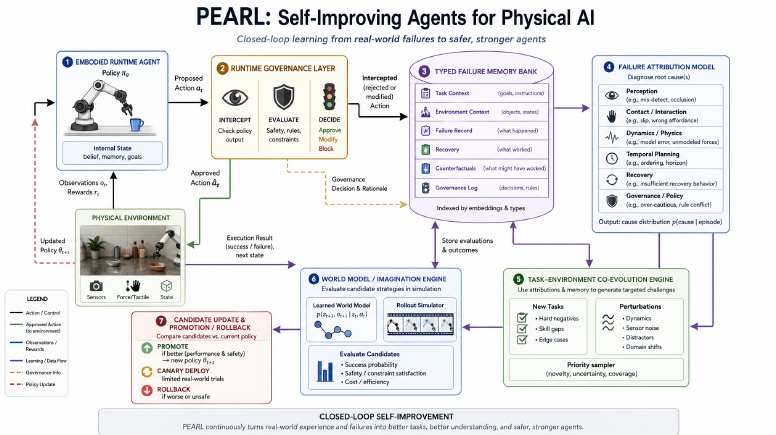
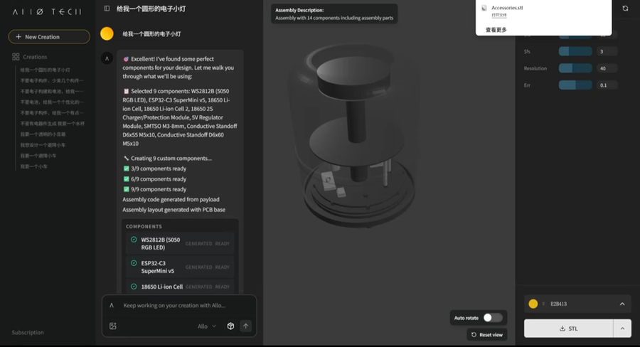
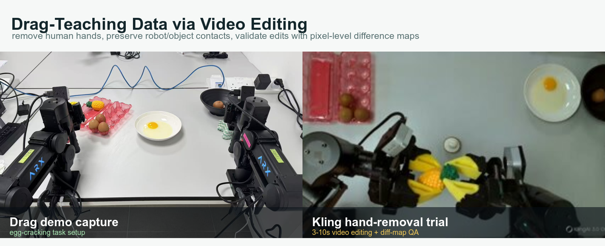
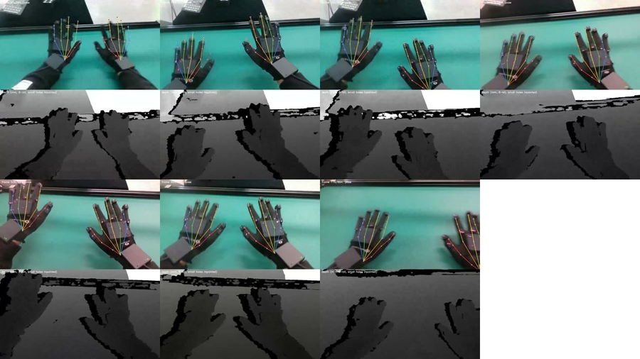
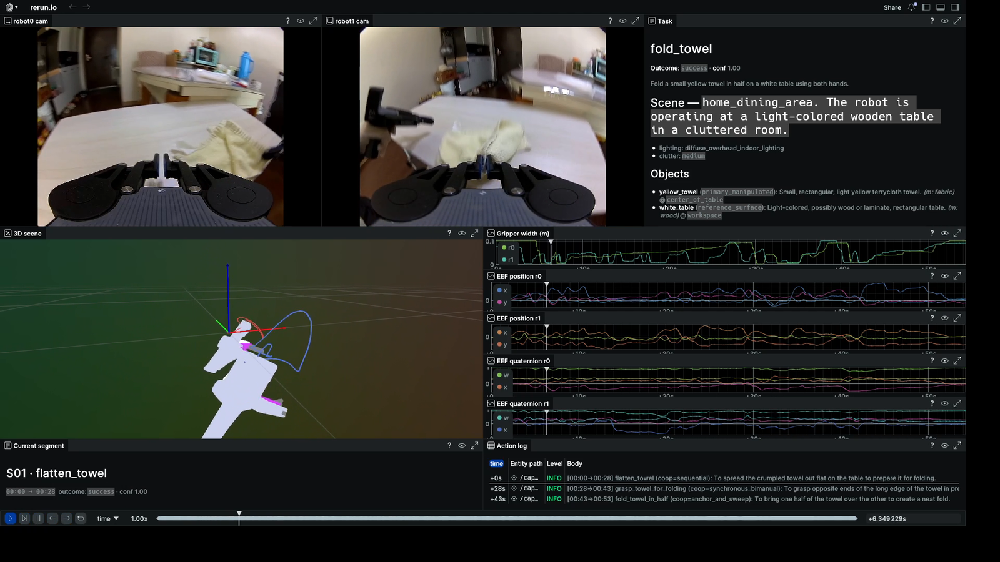

Frame the whole portfolio as one loop: real-robot infra collects and validates data; UMI / layered / HOI projects structure it; simulator and PoD projects turn it into robot tasks, evaluation, and physical outputs.
Weekly Project Dashboard
Embodied AI Project Dashboard
World models, self-improving simulators, teleop acceleration, and robotics + 3D printing
Week
2026-W20
Weekly Context Focus / progress / blockers / next
Completed items are archived after the weekly meeting: ARX infra, ready hardware baseline, Gemini frame localization, and 2077AI PnP calibration. UMI fine-grained segmentation survey is done but kept visible for next week's report; UMI base-model tests, Self-Improving Agents, Robotics + 3D Printing, and drag-demo video editing remain active.
Cross-device sync, calibration, and data schema; Franka + Wuji integration; UMI base-model route and evaluation set; LeHome / RoboLab unification; CAD-to-printer handoff; scope boundaries for survey tracks.
Finish the Franka + Wuji minimal run, run UMI TI2V / AI2V inference, write layered-WM notes, define the simulator task / asset interface, scope the PoD prototype, and harden the drag-demo hand-removal evaluation.
Storyline How real-robot infra, human demonstrations, video world models, simulators, and physical outputs form one loop.
Foundation
Real-Robot Data Infra
ARX, UMI, Cobot Magic, Linker hands, gloves, VIVE Tracker, and Franka + Wuji provide the hardware base for collection, calibration, and validation.
->
Data Models
Video + HOI World Modeling
UMI wrist views, layered third-person videos, same-task HOI data, and rate-curve teleop research turn human operation into structured video, action, and state data.
->
Outputs
Self-Improving Sim + Physical Products
Generated assets, household tasks, simulator rollouts, robot evaluation, and language / image-to-CAD design close the loop back into real-world experiments.
World-model sub-story
How generated videos become robot data, not only visual prediction
Wrist-view route
UMI Data via Teleop Video Model
Wrist-view UMI data can be generated directly from teleoperation trajectories: action, gripper state, and dual eye-in-hand views condition the video world model.
+
Third-person route
Layered Video World Model
Third-person videos are split into background, object, and robot layers, making them easier to use for scene understanding, IDM, reward models, and data augmentation.
->
Robot-data route
Agentic R2S2R to Dual-Simulator Data
Large volumes of generated video data become dual-simulator Robot Data through object physics assets, panoramic scene reconstruction, and digital-twin robot rollouts.
Visual References Hardware photos, extracted PDF figures, and current project snapshots used for weekly discussion.









Project Status
Two buckets: active implementation and research-stage ideas.
Ongoing
Active projects
Real-Robot Lab Infra Engineering stack for teleoperation, data collection, and robot-side validation Ongoing
This is the engineering base that keeps weekly research work grounded in real data collection and real-robot validation.
- Ready inventory baseline: Linker FFG, UDCAP data glove, Cobot Magic / Piper-X, Linker Hand L6, and Daimon UMI.
- Completed today: ARX / 方舟无限 real-robot infra setup.
- Active build: Franka arm + Wuji Hand integration.
- Planned input stack: Wuji Glove, MANUS glove, and VIVE Tracker.
TODO
-
搭建 Franka + Wuji Hand
先完成机械安装、驱动 / SDK 接入、ROS / Isaac 侧接口和最小动作验证，再接入数据记录。
-
接入 Wuji Glove
用于手部姿态、触觉和高频输入流；需要确认网络、时间戳、标定和 retargeting 接口。
-
接入 MANUS glove
作为另一套高精度手部输入方案，和 Wuji Glove 共用记录格式与 retargeting 验证流程。
-
接入 VIVE Tracker
用于腕部 / 物体 / 人体外参跟踪，后续和手套、相机、机器人状态一起做时间同步。
Archive 2 completed
-
完成方舟无限真机 infra 搭建
今天已完成首轮搭建；后续只需要继续补统一启动脚本、设备状态记录和数据采集 checklist。
-
整理当前 ready 设备基线
Linker FFG、UDCAP 数据手套、Cobot Magic / Piper-X、Linker Hand L6、Daimon UMI 已纳入 infra 清单；Linker TA 仍按搭建中跟踪。
Risks / Decisions
- 不同设备的驱动、SDK、ROS topic 和日志格式需要尽早统一，否则后面每条数据都会带维护成本。
- 手套、VIVE、相机、机器人状态要共享时间同步和外参标定策略。
- 真机 infra 必须保留安全边界：限位、急停、低速验证、碰撞恢复和操作记录。
- 工程状态需要和研究项目解耦：infra 卡片只追踪设备可用性，算法结果留在各项目卡片里。
UMI World Model Kinematics-conditioned dual eye-in-hand world modeling Ongoing

The core idea is to treat eye-in-hand UMI teleoperation as action-conditioned video generation: the robot action trajectory is also the wrist-camera trajectory.
Target ICLR submission
Sprint due May 23, 2026
Completed segmentation route, May 16
- Use the annotation / subtask-splitting panel to inspect dual wrist videos, task labels, motion curves, and segment boundaries together.
- Generate bimanual wrist-view videos conditioned on kinematics and gripper state.
- Maintain left-right consistency over object state and scene state.
- First decision: one-side generation + camera transform, or end-to-end synchronized dual video.
- Potential contribution: DiT structure with attention / AdaLN changes, then CameraNoise-style control after the base model works.
TODO
-
决定基模与初版训练规模
主要比较 Cosmos-Predict 2.5、WAN2.2-TI2V、LTX-Video；先用 5k-1w 条，1k-2k 条单任务训练初版，三者先只做 TI2V inference。
-
先跑 DreamZero / CtrlWorld inference
作为 AI2V 候选 codebase，先验证是否值得进入训练或改造。
-
准备基模 / codebase 测试集并发给 Haoyu
已围绕 Cosmos-Predict 2.5、WAN2.2-TI2V、LTX-Video、DreamZero / CtrlWorld，整理可直接跑起来的测试集和评测输入并发给 Haoyu。
-
建立 evaluation 数据与 VBench 评测
除可视化外，组织 100/200 条数据，用 VBench 做原生模型能力评测。
Archive 1 completed
-
检验 Gemini 做时间帧定位的精确程度
大部分精准；测试的 12 条内只有 1 条出现了 3-5s 的偏移。
Risks / Decisions
- 基模路线：先证明 TI2V 能力，还是同步推进 AI2V codebase inference。
- 时间帧切分调研已经收敛到 Gemini + key-state prompt / EE-Z 组合；下一步要把方案固化进 caption / relabel 流程。
- 初版数据规模要控制在能快速迭代的范围，避免一开始就把训练周期拉长。
- Evaluation 需要同时覆盖视觉质量、时序定位、动作条件一致性。
Self-Improving Agents for Physical AI Runtime-governed Robot-for-Robot data and evaluation system Ongoing
This project reframes agentic R2S2R as a self-improving Physical AI system: start inside Isaac simulation, use VLM-guided diagnosis and task/environment generation to improve the simulator and policy evaluation loop, then grow toward Robot-for-Robot data collection and benchmarking.
- Current focus: test LeHome and consolidate household tasks into one Isaac-compatible environment.
- Use PEARL-style typed failure memory, failure attribution, task-environment co-evolution, and runtime governance as the conceptual framework.
- Extend tasks with generated object physics assets and scene assets instead of relying only on fixed benchmark environments.
TODO
-
Test LeHome task stack
Run through lehome and lehome-challenge; map assets, task registration, data collection, and evaluation entrypoints.
-
Unify household tasks in one Isaac environment
Integrate LeHome household/deformable-object tasks with RoboLab-style Isaac Lab policy/evaluation infrastructure.
-
Add generative asset expansion
Use PhysX-Anything for simulation-ready physical object assets and WorldComposer for scene / Real2Sim asset generation.
-
Prototype VLM-guided simulator self-improvement
Let a VLM inspect rollouts, label failure causes, propose task/environment mutations, and feed candidates through executability and governance checks.
-
Define Robot-for-Robot output format
Specify generated tasks, assets, failure traces, evaluation scores, and policy-ready datasets as first-class outputs.
Risks / Decisions
- Scope should start in simulation: VLM-guided improvement of task/env generation before real robot deployment.
- Unification risk: LeHome, LeHome Challenge, RoboLab, and generated assets may expose incompatible task schemas.
- Executability is the key filter: generated tasks/assets must be physically valid, not only visually plausible.
- Runtime governance should be part of the learning signal, not only a safety wrapper.
Robotics + 3D Printing Language/image-driven PoD design to printable CAD Ongoing
Build a web product for Product on Demand: the user provides natural-language demand plus photos of existing real-world objects, and the system generates a printable retrofit / add-on part with assembly instructions.
- Target is existing-object modification, not generic decorative text-to-3D.
- Pipeline: VLM object analysis -> design spec -> concept image -> image/text-to-3D -> code-controlled CAD cleanup -> slicer / printer handoff.
- Allo suggests the interaction pattern for AI-assisted creation; Blueprint suggests prompt-to-hardware planning with generated diagrams, BOM, and assembly guides.
TODO
-
Benchmark photo / text-to-3D engines
Use one reference object image to compare MakerLab engines: Tripo AI 3.1, Hunyuan 3D 3.1, and Meshy 6; record geometry quality, printability, and editability.
-
Evaluate code-controllable CAD stack
Blender MCP seems practical for boolean cuts, scale edits, coordinates, and simple text insertion; compare with parametric options such as CadQuery / OpenSCAD / FreeCAD for more reliable manufacturing constraints.
-
Define PoD input schema
Text demand, object images, rough dimensions, contact surfaces, load/material constraints, printer type, and desired assembly behavior.
-
Prototype the agent pipeline
Analyze object + demand, write design prompt, generate concept image, call 3D model API, clean part in CAD, export STL / 3MF, then generate robot / human assembly instruction prompt.
-
Build one retrofit demo
Start from a MakerLab-style PoD case such as a Mac mini top power-button extender: existing object + small snap-fit / no-disassembly printed part.
Risks / Decisions
- Text/image-to-3D often returns meshes, but the product needs editable, manufacturable CAD and print-ready geometry.
- Single real-object images usually miss metric scale; need reference dimensions, calibration markers, or manual dimension entry.
- Blender MCP needs precise coordinates and operation-level commands for reliable edits; open-ended correction is likely too brittle.
- Direct printer handoff needs checks for watertight meshes, wall thickness, overhang/support, material constraints, queueing, and safety.
- The core value should be retrofit + assembly for real objects, not another standalone text-to-3D model generator.
Drag-Demo Video Editing Remove human hands from drag-teaching robot data Ongoing
This project turns drag-teaching demonstrations into cleaner robot-learning videos by deleting the human operator hands while preserving robot motion, object contacts, and task state.
- Masquerade is the closest reference: use data editing to reduce the human-robot visual embodiment gap. Here the robot is already visible, so the key edit is hand removal rather than robot overlay.
- Current seed task: ARX egg cracking, which has clear contact events and enough tolerance to become a first data-scaling case.
- Current progress: collected first drag-demo data, tried Kling video+prompt editing, and started before/after difference-map evaluation.
TODO
-
Collect initial drag-demo batch
Start with egg-cracking sequences; if editing quality holds, scale toward 100-300 drag-demo sequences and add a matching teleop subset.
-
Compare hand-removal backends
Kling is promising but limited to 3-10s clips and paid credits; also test VACE, FLUX.1-Fill-dev, and Stable Diffusion 2 Inpainting with masks.
-
Build diff-map QA
Compute frame-wise before/after pixel differences and highlight changed regions; good edits should mainly light up human hands, not robot links, egg, bowl, or contact geometry.
-
Define fine-tuning comparison
Compare teleop-only, drag+editing, raw drag-only, and mixed 70% drag + 30% teleop training data.
-
Add masks / collection aids
Use masks, green gloves / head cover, and anti-slip materials to reduce editing ambiguity and keep hand-object contact readable.
Risks / Decisions
- Editing quality must be judged by contact preservation and policy usefulness, not only by visual plausibility.
- Kling quality looks strong, but the closed API, 3-10s window, and credit cost make an open fallback necessary before scaling.
- Diff maps need object / contact consistency checks; a low difference score can still hide harmful hallucination.
- Drag demonstrations may have dynamics that differ from autonomous execution, so teleop-only and mixed-data baselines are required.
- Mask constraints may be needed before the pipeline can scale beyond the first egg-cracking task.
Research / Survey
Scoping projects
Image-Layered World Model Third-person video decomposition for reasoning and control Survey
Third-person video generation can be made more useful if it is decomposed into scene layers rather than treated as flat pixels.
- Target outputs: data augmentation, reward model, and inverse dynamics model.
- Robot layer should support robot priors at generation time: either a manipulator URDF or a single robot-arm image as the robot-condition input.
- Immediate work: survey layered video / object-centric generation methods.
TODO
-
Write Image-Layered World Model survey notes
Define background / object / robot layers; specify robot-layer conditioning from URDF or robot-arm image; connect outputs to IDM, reward model, and augmentation.
-
Compare layered video / object-centric generation methods
Decide whether the first version should be visual decomposition only or include object / robot state supervision.
Risks / Decisions
- Layered model scope: visual decomposition only, or state-aware layers from the beginning.
- Robot-layer input format: URDF gives explicit kinematic structure, while one robot-arm image is easier to collect but needs stronger identity / geometry inference.
- Evaluation target: data augmentation quality, reward-model usefulness, or IDM recoverability.
Superhuman Rate-Curve Teleop Learn faster-than-human execution from slow teleoperation Survey
EKA Robotics frames fast, reliable physical execution as a core capability. This project asks whether slower human teleoperation can be retimed into faster robot execution without collecting equally fast human demos.
- Separate what from when: preserve teleop path, contacts, and event order; optimize the time parameterization.
- Baseline with classical trajectory retiming under velocity, acceleration, jerk, torque, and contact constraints.
- Add an RL policy over a low-dimensional playback-rate curve, rewarded by success, speed, stability, and safety margin.
TODO
-
Define benchmark tasks and speed metrics
Compare human-speed replay, constant 2x/3x replay, classical retiming, and learned rate-curve replay.
-
Build a retiming baseline
Use time-parameterization / TOPPRA-style constraints before adding RL, so we know the classical ceiling.
-
Prototype RL over playback-rate curves
Action controls local speed multiplier; reward balances task success, shorter duration, smoothness, contact stability, and safety.
-
Mark event constraints in teleop demos
Do not accelerate perception waits, grasp confirmation, contact settling, or object state transitions blindly.
Risks / Decisions
- Need to distinguish hardware capability from policy speed; faster timing alone may not reproduce EKA-like performance.
- Contact-rich manipulation may fail under naive acceleration even if the geometric path is unchanged.
- RL should probably tune timing, not the full action trajectory, to keep the project scoped and demo-data grounded.
- Evaluation should include success rate at higher speed, not only shorter completion time.
Diverse Dataset on Same Task 2077AI / Zhou Jianshu collaboration for unified HOI data Survey
This pre-research project asks whether the same manipulation task can be collected across all major acquisition modes, then unified into an HOI-centric base model and predictive world model.
- Collection modes: human-centric and robot-centric views; Manus glove, UMI, ALOHA, kinesthetic / drag demonstration, and teleoperation.
- Reference framing: HOI-centric retargeting from glove / human posture to robot configurations, with Isaac Sim as the bridge for retargeting and simulation checks.
- Recent status: 2077AI spent substantial time on sensor synchronization; camera extrinsics now have an extra PnP calibration layer, and hand pose, depth, and ego camera are mostly ready.
TODO
-
Freeze the same-task collection matrix
Define the identical task across glove, UMI, ALOHA, drag demonstration, and teleoperation, with human-centric and robot-centric camera views.
-
Validate synchronized sensor package
Confirm hand pose, ego camera, and z16-encoded depth are aligned well enough for HOI supervision; z16 replaces depth heatmaps for better metric accuracy.
-
Add object tracking with the same mechanism as hand tracking
The object tracker should share the same tracking / calibration assumptions as the hand tracker rather than creating a separate data path.
-
Define unified HOI schema and baseline model target
Specify common timestamps, camera extrinsics, hand / object state, robot embodiment metadata, and the prediction target for the HOI base model / world model.
-
Connect retargeting baselines
Use the HOI Retargeting notes to compare Manus glove -> LEAP / Isaac Sim retargeting, AnyHand-style robot-guided retargeting, and object sim2real alignment ideas such as FoundationPose.
Archive 1 completed
-
Add PnP calibration layer for camera extrinsics
Extra calibration support was added to help 2077AI stabilize camera extrinsics after sensor synchronization took longer than expected.
Risks / Decisions
- Data value depends on same-task equivalence across embodiments, not only collecting more modalities.
- 2077AI collection capacity and sensor-sync reliability are current bottlenecks; the pipeline needs simple validation checks before scaling.
- Human pose maps to multiple feasible robot poses, so the target for retargeting / HOI prediction must be defined carefully.
- Object and hand tracking should share calibration assumptions; otherwise object-state supervision will drift from hand pose and depth.
- Predictive WM scope should start with aligned HOI state transitions before attempting a full cross-embodiment policy model.